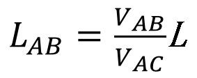
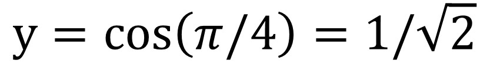
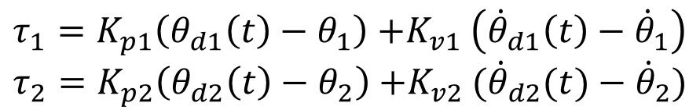
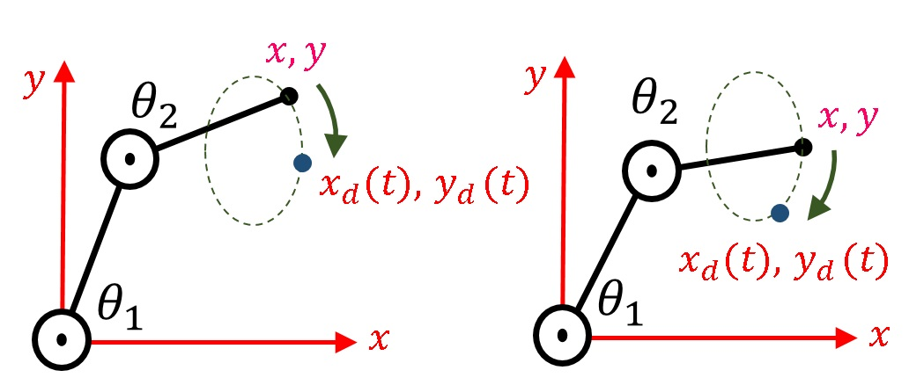
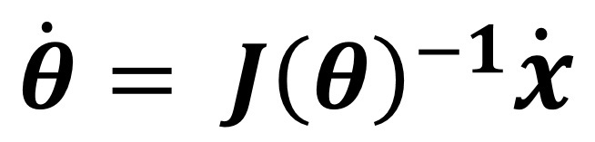

| 高校の知識で挑む！ 本格的なロボット工学: ロボット用センサ・アクチュエータ からマニピュレータ制御まで | |
| 木野 仁 | |
| (2016) | |
| Tags: | 高校, 物理, 数学, ロボット, 工学, 制御, コントロール, センサ, アクチュエータ, マニピュレータ, 力学, ロボコン, 基本 |
ロボット工学は機械工学、電気・電子工学、情報工学などの融合分野であり、これを極めるには、高度な知識を必要とする。しかし、その基本は、高校生で学習する数学・物理レベルで十分に理解可能である。本書では、高校レベルの数学・物理を拡張し、ロボット用のセンサやアクチュエータの仕組みなどを説明し、ロボットマニピュレータの制御（コントロール）を学ぶ。
高校の知識で挑む！
本格的なロボット工学
～ロボット用センサ・アクチュエータ
からマニピュレータ制御まで～
木野 仁
イラスト協力：南偶 景
1 はじめに
1.1 本書で扱うロボット工学の概要
近年、ロボット工学の分野が非常に注目されている。最近の20～30年くらいの期間で見れば、特に大きなターニングポイントは西暦1990年代後半の本田技研工業株式会社（ホンダ）のヒューマノイドロボット（人間型ロボット）、『Ｐ２』のお披露目であろう。
当時のロボット工学では、四足歩行ロボットはほぼ実用化のメドは立っていたが、二足歩行ロボットの実用化はまだまだ長い時間がかかると思われていた。そんな中、多くのロボット研究者は、ホンダの発表した滑らかな二足歩行に腰を抜かしたのである。私自身、初めてＰ２の動きを目にしたとき、あまりの滑らかな歩行動作に衝撃を受けた。正直に言って、「中に人が入っている」と疑ったくらいだ。
その後、ホンダではＰ２の後継機『Ｐ３』を経て、2000年にあの有名な『ASIMO（アシモ）』の発表に至ったのである。このＰ２やASIMOの開発によって、ヒューマノイドロボット実用化の扉が開かれたと言っても過言ではないのである。
このように、西暦2000年前後でロボット工学が大きく発展した理由は何であろうか？それはやはり、1980年代後半からの急速な科学技術の発展が、2000年前後に花を咲かせたと見ることが出来る。特に情報技術（いわゆるコンピュータやそれに関連する技術分野）の発展は、目を見張るものがある。計算機（コンピュータ）の計算速度や扱えるデータ数が増加し、より高度なプログラムが可能となっただけでなく、それらの高度なプログラムを利用して、結果的に新しいアクチュエータやセンサ、新素材などの設計・開発につながったのである。
ロボット工学として必要な専門知識を考えた時、機械工学、電気・電子工学、情報工学など多岐にわたっている。しかしながら、これらの様々な工学分野の基本技術というのは、高校数学・物理に代表される極めて基礎的な知識に基づくものが多い。
そこで本書では、２自由度のロボットマニピュレータを主な対象とし、高校数学・物理の知識に基づき1、ロボット用センサやアクチュエータ、マニピュレータ制御を学び、これらを通じて、改めて高校で取り扱うような基礎的な学習の重要性や、それらの利用価値を示唆したいと考える。
1.2 産業からみるロボット
現在、様々なロボットが実用化されている。例えば工場における産業用ロボットや、身近なところではお掃除ロボットなどである。さらに軍事産業などでは、無人偵察飛行機や無人戦車などが開発されて実戦投入されており、これも広い意味で言えばロボットの一種であると言える。まさにSFの世界の話が現実化してきている。
私は大学の先生をやっているが、入学したばかりの工学部の大学１年生に、
「将来どんな仕事にたずさわりたいのか？」
と尋ねると実に多くの学生が
「ロボットの仕事をしたい」
と答えている。しかし、『ロボットの仕事』と言っても、いったいどんな仕事があるのだろうか？
ロボットの仕事と言う観点から、産業用ロボットの市場に目を向けてみよう。経済産業省が2012年に発表したデータによると、世界の産業用ロボットの市場規模は約6600億円であり、このうち、日本のシェアが約57％である。しかし、今後、中国・韓国などのライバル国が台頭してくることは容易に予想され、日本のシェアがどのように変化していくかは不透明である。
この産業用ロボットの市場規模に対し、参考までに自動車の生産との比較を見てみよう。西暦2008年の世界の自動車生産台数は約7000万台に対し、日本車の主要自動車メーカーによる生産台数は約2300万台となっている。世界の自動車生産の約33%が日本のシェアとなる。今、話を簡単にするために一台の自動車の価格を200万円とすると、単純計算で460000億円となり、産業用ロボットと比較すると市場規模の約70倍の差となっている。
このデータから分かることは、意外にロボットは商売になっていないということである。しかし、ここで対象としているロボットは産業用ロボットに関するものである。現在、ロボットテクノロジー（RT）は、実は様々なところで利用されている。例えば、大きな電気店に行くと必ずと言ってよいほどおいてあるマッサージチェア。実はあのマッサージ部分はある意味でロボットアームであり、ロボットアームが人間をマッサージしていると考えることが出来る。マッサージチェア以外にも、例えば自動車の自動走行などもロボット技術の応用であると言える。このようにRTを利用する製品が盛んに開発されており、見えないところでロボット工学が利用されているのである。このように考えれば、今後、ロボット技術は、一見するとロボットと関係ないように思われるような様々な分野に進出していくと予想される。
1.3 ロボットマニピュレータとは
図1.1： ロボットマニピュレータ
先述したようにロボット工学は機械工学、電気・電子工学、情報工学などの複合分野であり、ロボット工学が取り扱う内容も、ロボット知能からロボットハンド、センサ、画像処理、移動（歩行など）など多岐にわたる。その中でも、本書では、主にロボットマニピュレータの制御について取り扱う。『マニピュレータ』とは、英語のマニピュレート（操作する）からきており、図1.1のように産業用ロボットに代表される『腕』、つまりロボットアームだと思ってもらえれば良い。
ただし、「ロボットの腕を対象」などと言うと、読者の中には
「たった1本の腕？人間型ロボットとか二足歩行とか、そう言うのに興味があるんだよね」
と思う人がいるとは思う。しかし、ヒューマノイドロボットは見方によっては、胴体に腕2本、足2本の合計4本のマニピュレータが接続したものだと考えることが出来る。逆に言えば、腕一本を満足に動かせないのに、人間型ロボットを満足に動かすことなど出来ないのである。何事も基礎が大事なのだ。
2 ロボット工学を学ぶうえでの予備知識
2.1 高校の数学・物理について
本書は高校数学・物理を理解していることを前提に話をすすめる。もし、これらの内容を忘れてしまったり、カリキュラムの関係上で履修していない読者は、これを機会に復習・学習して頂きたい。また、読者の中には現役の中高生がいるかもしれない。そのような学生は、是非とも学校の数学・物理の進行に合わせて、じっくり学んで頂きたい。
また、文科省の教育方針は年々変更されるため、高校で習う数学・物理の内容も年々変更されている。例えば、我々の世代では行列とベクトルの計算は高校数学で習ったことであるが、近年ではこれらの内容は高校数学では削除されていると言う。しかし、ロボット工学を学ぶ上で、行列とベクトルの計算は必要不可欠と言っても過言ではない。本書では、2次元ベクトルと2×2行列についても、理解しているものとして解説を進める。
2.2 高校では習わない基礎知識について
さて、本書をすすめる上で、どうしても高校生では習わないことも最低限は使う必要があるので、本章ではそれらを説明する。
2.2.1 トルクとは
トルクとは、イメージ的に言えば、『回転力』がしっくりくる表現である。高校物理で習うように質量m[kg]の質点に力f[N]の力が加わった場合、加速度a[m/s2]との関係は次式で表現される2。
・・・式(2-1)
上式において、加速した質点は速度を変化させ、結果的に移動距離を変化させる。このように、質点が移動することを並進運動とも言う。並進運動とは簡単に言えば、回転運動を考慮していない運動のことである。
ここで2つの質点（AとB）があったとして、Aの質量は1[kg]、Bの質量が2[kg]であったとする。両者に同じ力f=1[N]を加えた時、それぞれの加速度はAが1[m/s2]であり、Bは0.5[m/s2]となる。つまり、質量とは『加速のしにくさ』と考えることが出来る。
一方、図2.1の左図のように、回転軸にハンドル部が固定されており、ハンドルが回転する場合を考える。このような回転運動の場合は、先述した並進運動の概念はそのまま適用できず、並進運動を拡張した別の概念が必要となる。今、図2.1の左図のように軸の中心からr[m]のハンドル部に、ハンドルの方向と常に直交する力f[N]を受けているとする。この力fによってハンドルの回転角θ[rad]3が変化する。この時、回転に関する角度の加速をaθ[rad/s2]とすると、回転運動に関して以下の式が成立する。
・・・式(2-2)
図2.1： トルクの概念
上式において、I[Nms2/rad]を慣性モーメントと言う。また、ハンドルに直交する力fと回転軸からの距離rを掛けたf×rを『トルク』と呼ぶ。ここではトルクをτとすると、τ=f×rであり、物理量は[Nm]となる。トルクτを用いて上式を書き直すと
・・・式（2-3）
と書き直される。もう少しトルクの式を詳しく見てみよう。最初のところで「トルクのイメージは回転力である」と説明したが、式(2-1)に示される質点の並進運動の加速の式と比べてみると、非常に良く似ていることが分かる。つまり、式(2-3)において、トルクτが与えられた時、軸は角加速度aθで回転加速する。この『角加速のしにくさ』を表すのが『慣性モーメントI』である。
トルクはロボットのマニピュレータを動作させる際に、「関節軸に加えるトルクをどのくらいにすれば、どのような関節運動が得られるか？」などの関係を求める必要があるため、ロボット工学において重要な概念の１つである。
この概念を用いるとテコの原理も説明できる。今、図2.1の右図のようにシーソーの両端に物体AとBが乗っており、重力によって釣合っていたとする。この時、Aの質量が1[kg]、Bの質量が2[kg]とし、それぞれ回転軸から2[m]と1[m]のところに存在していたとする。この時、回転の正方向を反時計回り、重力加速度をgとすれば、Aによって発生するトルクτA=2g[Nm]であり、Bにより発生するトルクはτB=-2g[Nm]となる。結局、この場合では2つのトルクが釣り合っていることから、τA+τB=0となる。
2.2.2 変位・速度・加速度と微分・積分の関係
一般的に高校物理の力学では、解説において微分の概念を導入していないために、速度や加速度の関係を理解することが逆に難しくなっていると思われる。ここでは念のため、これらの関係を補足しておく。
今、質量mの物体が並進運動しており、基準点からの距離をx[m]とする。この時、速度v[m/s]は距離xを時間t[s]で微分し、
・・・式（2-4）
で表現できる。本書では、変数xに対し時間tで一回（数学的に言えば一階）微分している場合、dx/dtの表記を省略し、のように変数xの上に1つ点（ドット）を加えることで表現する。二回（二階）の時間微分を行う場合にはドットは2つ付き、n回の時間微分の場合にはドットがn個付く。この表現は本書では多様するので、是非とも覚えていただきたい。
次に加速度a[m/s2]は速度vを更に時間微分することで、以下のように得ることが出来る。
・・・式(2-5)
つまり、加速度aは速度vを時間tで一階、もしくは距離xを二階微分することで得ることが出来る。逆に言えば、加速度を時間で積分すれば速度に、速度を積分すれば距離になる4。
この並進の速度・加速度の概念を回転に拡張しよう。先ほどの図2.1の左図のように、軸を中心に回転する場合を考える。この場合では角度θ[rad]が時間によって変化するので、角速度ω[rad/s]は次式となる。
・・・式(2-6)
更に、角加速度aθ[rad/s2]は次のようになる。
・・・式(2-7)
並進と同様に回転の場合にも、角加速度を時間積分すれば角速度に、角速度を時間積分すれば角度に変換できる5。
以上のように、並進と回転の速度・加速度の関係は強い類似性が成り立つ。その他、運動量や運動エネルギー、弾性力、弾性エネルギーにも強い類似性が成り立つ。これらの関係を表したのが、表1-1である。
なお、並進の場合の距離や回転の場合の角度のことを、まとめて変位（へんい）とも呼ぶ。
変位、速度、加速度などの変数は、時間t[s]によって変化する。そこで時間に依存して変化する変数を、例えばx(t)やv(t)のように(t)を添えて表記することがある。ただし、省略して単にxと記述することもある。
表1-1： 並進運動と回転運動の類似性
2.2.3 ロボット工学の基礎用語
さて、トルクなどの新しい知識の説明が終わったので、次にロボット工学を学ぶうえでよく用いられる用語について説明する。
ロボットのみならず、電車・飛行機などの機械の物理量（位置や速度など）を、希望する状態にすることを『制御』という。制御を英語で言えば『コントロール（control）』であり、英語のほうが直感的に理解しやすいかもしれない。例えば、ロボットの手先位置をある指定の位置まで移動したいとき、「手先位置を制御する」という。一般に制御を行う場合には、対象の物理量を計測するセンサが必要となる。
次に、『フィードバック制御』について説明する。フィードバックとはセンサで計測した物理量を参考に、制御量を調節することを言う。少しわかりにくいので暖房器具を例として説明する。今、図2.2のように、寒い部屋に最新の石油ファンイヒーターと昔の石油ストーブがあったとする。
図2.2： フィードフォワード制御とフィードバック制御の例
石油ファンヒーターでは目標温度として28度を設定し、暖房運転を開始したとする。図2.2(b)の石油ファンヒーターは室内の温度を温度センサで計測し、室内温度が目標温度（28度）より低ければ暖房運転を継続する。もし、室内温度が十分に暖まり、目標温度より高温になった場合は、暖房運転を停止（もしくは緩やかに）させる。この場合には外部環境より部屋は常に冷やされているので、室温が下がる。そして、今度は目標温度より低くなれば再度、運転を再開する。この例では温度センサにより温度をフィードバックして、出力（暖房運転）を制御している。図2.2(b)のように物理量の信号が出力に戻されている（バックしている）のが特徴である。
次に図2.2(a)の石油ストーブで、暖房する場合を考えよう。この場合には灯油を燃焼させて室内の温度を温める。一度スイッチを入れて暖房を開始すると、人間が燃焼量を手動で調節しないかぎりは、周りの温度に関係なく、ひたすら一定の燃焼量で暖房しつづける。この場合では、実際の室温を燃焼量に反映していない（つまりフィードバックしていない）。このような方法も温度制御の１つであるが、図2.2(a)のように制御量が一方方向にしか進んでいない。このような制御手法を『フィードフォワード制御』という。
ところで、石油ファンヒーターや石油ストーブのように、制御したい対象を『システム』と呼ぶことがある。ただし、システムという呼び名は少し曖昧な意味を持つ。例えば石油ファンヒーター単体もシステムであるし、石油ファンヒーターと外環境を含む周囲全体をシステムと呼ぶこともある。また、センサ単体もシステムなどと呼ぶこともある。システムとは『何か入力すると何か出力するもの』の総称である。少し感覚的なものなので、慣れが必要と思われるが、ロボット制御を学ぶ上で、システムという名称はよく登場する。
3 ロボット用アクチュエータ
3.1 駆動原理にもとづく分類
アクチュエータとは、actuate（駆動する）ものであり、ロボットの世界では、図3.1のように、いわゆるモータに相当するモノやそれを含む駆動機構全体をアクチュエータと呼ぶ。ロボット用のアクチュエータには様々な種類が存在し、その特性も様々である。実際にロボットを設計する場合などでは、ロボットの目的の仕様に合わせてアクチュエータを選定する必要があるし、既存のロボットでは搭載されたアクチュエータの特性を理解したうえで、目的の動作を決めなくてはならない。
図3.1： ロボット用アクチュエータの例
本書では駆動原理にもとづき、ロボット用アクチュエータを以下のように分類して解説してゆく。
・電磁駆動
・油圧駆動
・空圧駆動
・その他
一般にアクチュエータの選定のポイントとしては、コスト、発生力（発生トルク）、耐久性、重量、運動スピードなどがポイントとなる。
なお、アクチュエータの発生動作に注目すれば、図3.1(a)のように軸が回転する回転アクチュエータ（ロータリーアクチュエータ）と図3.1(b)のように前後方向に動作する直動アクチュエータ（リニアアクチュエータ）などにも分類することも出来る。
ここでは簡単に上述したアクチュエータの説明をしよう。
電磁駆動アクチュエータは、文字通り電磁気力で駆動するアクチュエータであり、フレミングの左手の法則で習ったローレンツ力や磁力を利用する。電磁駆動アクチュエータは、一般に取扱いは容易である。しかし、大きなトルクを取り出すことが難しいために、多くの場合には『減速機（ギア、歯車）』を組み合わせることで、大きなトルクを発生させている。しかし、その場合は回転スピードの低下や重量の増加、大型化などを招き、これらが欠点となる。
油圧駆動アクチュエータにおいて、読者が最も目にする機会が多いのは、ショベルカーなどに使用されている油圧シリンダであろう。図3.2に示すような直動型のアクチュエータである。油圧シリンダの原理としてはシリンダ内部に外部ポンプから圧力を加えられた非圧縮性6の油が流入することで、ピストンを駆動させる。流入する油は少しずつでもピストンの断面が大きければ、大きな力を発生できる。
一般にスピードは遅いがその発生力が大きいため、大きな力を必要とする土木・建築機械に多く用いられている（ショベルカーもロボットの一種類と考えられる）。ただし、ポンプの騒音や油漏れなどの観点から、病院などの静音・クリーンな環境が要求されるところでは利用されない。また、ポンプなどの設備も別途必要とする。
今回はシリンダのように直動アクチュエータを紹介したが、通常のモータのように回転する油圧モータも存在する。
空圧駆動アクチュエータの基本的構造は図3.2に示すように油圧駆動と同じである。空気圧駆動とも言われ、周囲の空気を用いる点が一番の相違点である。油圧シリンダと同様に空気圧シリンダとして用いられることが多い。
空気は圧縮性7のため油圧駆動ほどのパワーは出しにくいが、それでも電磁駆動アクチュエータに比べれば容易に大きな力が発生できる。空気の圧縮性のため、アクチュエータの動きに柔軟性を持たせることが可能である。油圧駆動と同様にポンプなどの装置が必要であるが、駆動部自体は極めて軽量に作ることが可能である。また、油圧駆動と異なり、仮にシリンダ内部の空気が漏れたとしても、周囲を汚したりしないことも大きな利点である。
シリンダの代わりに回転アクチュエータとして用いられたり、柔軟なゴムチューブを用いることで人口筋肉として用いられることもある。
その他のアクチュエータとしては水圧駆動アクチュエータ、超音波アクチュエータ、電圧を加えることで変形する圧電素子や、熱を加えることで変形する形状記憶合金、高分子アクチュエータなどがある。
図3.2： 油圧駆動アクチュエータと空圧駆動アクチュエータの例
3.2 電磁駆動アクチュエータ（直流モータ）の仕組み
本節では、ロボット用アクチュエータとして利用される頻度の高い電磁駆動アクチュエータの駆動原理を解説する。電磁駆動アクチュエータでは、磁界中に電流を流すことで力を発生させるローレンツ力や、電磁石による磁力そのものを用いる。電磁駆動アクチュエータには、その駆動原理によりさらに細かく分類され、直流モータ、交流モータ、ステッピングモータなどの種類が存在する。本書では代表的な電磁駆動アクチュエータとして、高校物理で習う電磁気学の内容で理解できる直流モータについて取り扱う。
図3.3： 直流モータの仕組み
直流モータは図3.3のようにコイルの左右を磁石で挟み磁界を発生させ、磁場中のコイルに電流を流して回転させる。コイルは軸に連結しており、コイルが回転力を受けることで軸が回転する。
はじめにコイルの導線が一本の場合を考える。中学の理科や高校の物理で習うように、磁場の中の導線に電流を流すとフレミングの左手の法則により、力が発生する。これをローレンツ力と言う。磁場を発生させる磁石は電磁石と永久磁石を用いる方法があるが、ロボットマニピュレータに用いられる比較的小型の直流モータの場合には、永久磁石を用いることが多い。
今、磁石によって発生される磁場の磁束密度をB[Wb/m2]とし、磁場の影響を受ける導線の長さをl[m]、導線に流れる電流をi[A]とする。この時、この導線に加わる力F[N]は、高校物理で習う公式より次式で表される。
・・・式(3-1)
この力により、軸にトルクが発生する。上式は導線1本の場合であったが、この考えを拡張して導線を何回もコイル状に巻くと、流れる電流は同じでも巻いた分だけ発生力を稼ぐことが出来る。
また、コイル一本の例では、軸の回転角によってコイルを横切る磁束密度が変化してしまい、発生する力も軸角度に依存してしまう。そこで実際の直流モータでは、コイルの巻く方向を複数にすることで、回転軸の角度が変化しても一定のトルクを得られる。
以上より、一般的な直流モータでは軸の発生トルクτ[Nm]は以下のように発生すると考えることができる。
・・・式(3-2)
ただし、kmは比例定数であり、モータのトルク定数などと呼ぶ。ここで重要なことは、直流モータの発生トルクτはモータに入力される電流iに比例するということである。
逆に言えば、直流モータの軸に対して特定のトルクが必要な場合では、上式を逆算して、それに対応する電流を制御用コンピュータからモータに入力してやればよい。
図3.4： 直流モータとモータドライバの信号の流れ
しかしながら、一般に制御用コンピュータ単体では、モータに対し直接的に任意の『電流』を与える機能は持っていない。その代わりに後述するDA変換器という機器をコンピュータに接続すれば、コンピュータから任意の『電圧』を出力できる8。
そこで登場するのがモータドライバ（直流アンプ）である。モータドライバの機能は、入力電圧V[V]に比例した出力電流i[A]を発生し、直流モータに与えることが出来る。すなわち、モータドライバに入力する電圧と出力される電流の関係は次式で示される。
・・・式(3-3)
ここでkdrは比例定数である。図3.4のようにモータドライバに直流モータを接続することで、モータドライバに入力される電圧Vに対し、モータの出力トルクτは次式のように比例関係で示される9。
・・・式(3-4)
実際には、モータに対してあまり大きな電流を流すと、内部のコイルのもつ電気抵抗から発熱し、コイルが焼き切れてしまう。従って、モータ内部に流せる電流には上限が存在する。
一般に油圧駆動や空圧駆動などの他のロボット用アクチュエータに比べ、電磁駆動アクチュエータは発生トルクが小さい。大きな電流を流せば、理論的には大きなトルクを得ることが可能であるが、実際には、上述したように電流の上限値が決まっている。
これに対し、コイルの断面積を増やし電気抵抗を小さくすれば、大きな電流を流すことが可能となるが、今度はアクチュエータの重量が増してしまう。アクチュエータの重量が増せば、回転加速しにくくなるばかりでなく、ロボットマニピュレータ内部にアクチュエータを組み込んだ場合に、マニピュレータの自重が増加し、重力の影響を取り除くための重力補償にモータの発生トルクを費やしてしまい、実際の運動生成に利用できるトルクが限られてしまう。
この欠点を補うために、多くの場合にはギア（歯車、減速機）を用いる。しかしながら、ギアはトルクを増大することはできるが、代わりに回転速度は低下してしまう。その他にも摩擦による伝達ロスや、ギア設置に伴う重量の増加も欠点となる。
また、直流モータの多くには軸の回転運動に対し電流の向きがスイッチングするように、ブラシが用いられている。しかし、ブラシ接点が摩耗して壊れやすいという欠点も存在する10。
4 ロボット用センサ
アクチュエータの次はセンサである。センサは一言で言えば、距離や力、温度などの物理量を計測する装置である。通常、ロボットには様々なセンサが利用されている。代表的なセンサをあげれば
・距離センサ
・角度センサ
・温度センサ
・力センサ
・カメラセンサ
・角速度センサ
・加速度センサ
・その他
などの種類が存在する。ロボットを設計する場合や実際に動かす場合には、使用するセンサの測定可能な物理量や測定精度などを知っておく必要がある。
本書では、ロボットマニピュレータへの重要度が高いセンサのうち、高校物理での知識でその仕組みが理解可能な角度センサ、力センサの２つについて説明をする。
4.1 角度センサ（ポテンショメータ）
はじめに角度センサについて説明する。一般に角度センサは回転軸を持ち、その回転軸の角度を計測する。見た目は直流モータとよく似ている。ただし、自分自身で軸を回転させることは出来ず、軸を外部から回転させることで、軸の回転角度を出力させる。角度センサの代表的なものに、ポテンショメータとエンコーダがある。
図4.1： 電気抵抗値と計測することで距離が分かる仕組み
はじめに、ポテンショメータについて説明する。ポテンショメータは可変抵抗回路の電圧変動を利用した角度センサである。
簡単のために、図4.1のように長さL[m]の一様な電気抵抗を持つ、直流回路を考える。与える電圧を10[V]とし、電気抵抗の両端を点Aと点Cとする。また、電気抵抗上に点Bがあり、端点Aと電気抵抗上のある点Bにかかる2点間の電圧VAB[V]を電圧計で計測する。ここで端点Aは常に固定であるが、点Bは電気抵抗上を左右に移動できるとし、2点間の距離をLAB[m]とする。
今、点Bが端点C上にあったとき、2点間の距離はLAB=L[m]であり、電圧VAB=10[V]である。次に点Bが電気抵抗の真ん中（LAB=0.5L[m]）にあったときを考える。ここで、この電気抵抗ACを仮想的にAB間の電気抵抗1とBC間の電気抵抗2と分離して考えると、これは高校物理で習う『電気抵抗の直列結合』と同じである。従って、AB間の電圧は0.5[V]となる。
次に、点Bが移動して、LAB=0.1L[m]のところにあるとしよう。この場合も電気抵抗ACを2つの電気抵抗に分解し、直列結合していると考える。この場合ではAB間の電圧はVAB=1[V]となる。
今回は簡単のために、AB間にかかる電圧を10[V]としたが、これをVACとすると、電気抵抗上の点Bの位置が変化したとき、AB間のVAB電圧は次式で求まる。
・・・式(4-1)
従って、AB間の距離LABは計測した電圧VABから逆算して、以下のように求めることが出来る。
・・・式(4-2)
図4.2： ポテンショメータ（角度センサ）の仕組み
以上の仕組みは、実際に直動方向の距離を計測するセンサとして用いられている。次にこの原理を応用して、角度を計測する角度センサに拡張してみよう。今、図4.1の直流回路を図4.2のように、電気抵抗線をグルっと曲げて円状にし、点Bは時計の針のようなパーツの先端に取り付ける。
このパーツは軸によって回転し、点Bは円状の電気抵抗を接しながら移動する。この時の軸の角度をθ[rad]とし、電気抵抗回路の全体に加える電圧をVAC[V]とする。
ここで、先述した直流回路と同様に2点間ABの電圧を計測することで、円周上の距離ABを計測することが可能となる。今、点Bが点Cと一致した時の角度（最大角度）をθMAX[rad]とする。
もし、電圧VABを計測したときに、電圧VAB=0.5VAC[V]であれば、角度θ=0.5θMAX[rad]であることは容易に理解できよう。このように、電圧VABを計測することで角度θを次式のように計算できる。
・・・式(4-3)
以上が、ポテンショメータと呼ばれる回転角度センサの仕組みである。ポテンショメータの一般的な特徴として、構造が簡単、安価などのメリットが存在するが、点Bが電気抵抗と物理的な接触し、移動するために磨耗して寿命が短いことや、周囲の電磁波の影響などから電圧計測の際に、ノイズがのりやすいなどの欠点がある。
今回は簡単のために１周しか計測できないセンサで説明したが、電気抵抗を螺旋状にし、接点Bを螺旋階段のように移動させれば、複数回の回転角度を計測できる。
4.2 角度センサ（エンコーダ）
次にエンコーダ（ロータリエンコーダ）と呼ばれる角度センサを紹介する。エンコーダのイメージを図4.3に示す。エンコーダでは図のように回転軸に薄い円盤を接続し、その円盤に一定の間隔でスリット（溝）を刻んでおく。エンコーダ内部には発光体が存在し、そこから出た光は円盤のスリットを通過し、受光部で感知する。円盤のスリットがない場所では光は遮られ、受光部で感知できない。
図4.3： エンコーダ（ロータリエンコーダ）の仕組み
従って、軸が一定方向に回転すると、スリット部では受光し、スリット部以外では受光できないため、回転角度が増加するにつれ、受光部での受光回数が増加する。このとき、受光の有無はパルス状で現れる。この光のパルスの回数をカウンタとよばれる装置で計測することで、回転数を計測するのが、エンコーダである。
例えば、1周すれば、360パルス計測されるようにスリットを刻んでおいたとき、回転によって60パルスの受光が計測できれば、それは60度回転したことになる。スリットの数が増えれば、それだけ小さな角度が計測出来る。このように「1周あたり、いくつのパルス数を出力できるか」がエンコーダの計測精度となる。
図4.3の例ではイメージを優先するために円盤を1枚とした。この例では、逆回転しても受光パルス数が増加してしまい、正転と逆転の区別が出来ない。実際のエンコーダでは円盤を複数にするなどして、逆方向では角度が減少し、正しい軸角度が計測できるように工夫されている。
エンコーダは、ポテンショメータのような電気的接点がないので、寿命が長い。また、パルス数はデジタル信号なので、ノイズが生じないという利点がある。一方でエンコーダよりも構造が複雑、価格が高いなどのデメリットも存在する。
なお、角度センサは、単品のセンサとして購入できるが、モータの回転角度を計測したい場合には、図4.4のように直流モータと角度センサの軸が接続され、セットになった商品が売っている。この場合は、モータの軸角度が直接計測できる。

4.3 角度センサを用いた角速度計測
ロボットマニピュレータの制御では、時にはモータ軸の角速度の情報を制御に利用する場合がある。モータ軸の角速度を計測するには、角速度センサを用いる方法が思いつく。しかし、一般にはモータや関節の軸角度を計測するために角度センサがすでに搭載されている場合が多く。、これに加えて角速度センサを搭載するのは、コスト、重量、メンテナンスの面から避けたい。そこで、角度センサを用いた角速度の計測について解説をしよう。
一般にコンピュータなどでロボットを制御する場合には、コンピュータの処理は極めて短い周期で行われている。例えば、コンピュータの処理が0.001秒ごとに処理されているとすると、角度センサの計測も0.001秒ごとに行われる。このコンピュータの処理の間隔のことをサンプリング周期とかサンプリング時間などと呼ぶ11。
図4.5： 角度センサを用いた角速度の近似計測
今、角度センサの軸角度について、ある瞬間の角度θを計測したとき、その1つ前のサンプリング時間Δt[sec]前に計測された角度をθ'とする。この時、Δt[sec]間に変化した角度ΔθはΔθ=θ-θ'となる。そこで、図のように平均角速度ω[rad/s]は傾きを計算すればよいから、以下のように求めることが出来る。
・・・式(4-4)
この手法はあくまでも、ある瞬間とそのΔt秒前の間の角度変化に対する平均速度であり、ある種の近似であるが、多くの場合はこの手法でも問題なく角速度が可能である12。
4.4 力センサ
ロボットマニピュレータに作業をさせる場合、ロボットの手先位置だけでなく、手先の力を制御したい場合がある。このような時には、手先の発生力をセンサで計測する必要な場合がある。力センサにもいつくかの種類が存在するが、ここでは、高校物理で理解可能な歪（ひずみ）ゲージを使った力センサの仕組みを説明する。
図4.6： 歪ゲージを用いた力センサ
歪ゲージとは図4.6のように薄いフィルムの中に、1本の電気抵抗線が何重にも往復に束ねて入れてある。用途に応じて歪ゲージの大きさは様々であるが、一例としては小指の爪くらいのものと思ってもらえれば大きさのイメージがつきやすいだろう。
歪ゲージからは電気抵抗線の両端が出ている。中に入っている電気抵抗線をまっすぐに伸ばすと、それなりの長さとなる。
歪ゲージを力センサとして用いる場合には、薄い金属片などの表面部に歪ゲージを接着する（接着剤などを用いる）。この金属片が力センサとして、外部から力を受ける部分である。今、歪ゲージを接着した金属片に対して引張り力を与える。金属片は微小ではあるが変形して引張り方向に伸ばされ、同時に接着した歪ゲージも引張り方向に伸ばされる。その結果、歪ゲージ内の電気抵抗線が引張り方向に伸ばされる。
歪ゲージが微小な伸びでも、電気抵抗線は歪ゲージ内部で何往復もしてあるため、その分だけ変形が増幅しているのがポイントである。
図4.7： 電気抵抗線は伸びると電気抵抗が増加する
さて、ここで、高校物理の電気抵抗線の知識を思い出そう。図4.7のように一様な電気抵抗線の抵抗値をR[Ω]とすると、抵抗値は以下のように長さl[m]に比例し、面積S[m2]に反比例する。
・・・式(4-5)
ただし、ρは抵抗率と呼ばれる定数である13。
今、電気抵抗線が引張り力を受け、長さlから伸ばされてl+Δlになったとすると、電気抵抗値は増加し、
・・・式(4-6)
となる。上式においてΔRが増加した電気抵抗分である。ただし、ここでは、断面積の変化は非常に小さく無視できるものと仮定する。
図4.6の歪ゲージの話に戻ろう。歪ゲージを接着した金属片に力fを与え、歪ゲージ内の電気抵抗線がΔlだけ伸びたとすると、フックの法則より次式が成り立つ。
・・・式(4-7)
ただし、klは比例定数とする。従って、力fによる歪ゲージの電気抵抗線の抵抗値変化ΔRは式(4.6)より、以下で表される。
・・・式(4-8)
以上より、力センサに加えられた力により、歪ゲージ内部の電気抵抗値が比例で変化することがわかった。次にこの抵抗値の変化を電圧として読み取る方法を考えよう。ここで登場するのが、またもや高校物理で習うホイートストンブリッジ回路である。
図4.8： ホイートストンブリッジ回路
ホイートストンブリッジ回路は図4.8のような回路のことである。単にブリッジ回路とも言う。この回路は直流電源と4つの電気抵抗から構成される。今、４つの電気抵抗のそれぞれの抵抗値をR1～R4[Ω]とする。この時、左図の回路のように、4つの抵抗値が全て同じならばCD間の電圧VCDはゼロになることが知られている。
しかし、右図のように4つの抵抗値のうち、1つの抵抗値（この場合ではR4）が変化した場合には、バランスが崩れ、CD間の電圧VCDに電圧が発生する。
図4.9： 歪ゲージとホイートストンブリッジ回路を使った力センシング
この原理を使って、歪ゲージの抵抗値変化を電圧として読み取ることを考える。今、4つの電気抵抗線のうち、R1～R3の電気抵抗値を同じものとし、R4の代わりに金属片に接着した歪ゲージを取り付ける。R1～R3の電気抵抗値をR[Ω]、歪ゲージの抵抗値をR4[Ω]とする。
このとき、金属片に何も力を受けていない時の歪ゲージの電気抵抗値は抵抗R1～R3と同じとしておく。つまり、力を受けていない時、R4=Rとなる。AB間にかかる電圧をVABとすれば、VCDは以下のように計算できる。
上式より、力を受けていない時（R4=R）、VCD=0であるのが理解できる。
さて、金属片が力fを受け、歪ゲージの抵抗値がR4=R+ΔRに変化したとすると、点CとEの間に電圧（電位差）が生じる。この時、VCDは以下のように計算できる。
この時、R>>ΔRであることから、次式のように近似可能である。
従って式(4-8)を考慮し、結果的には金属片に加わる力fと電圧VCDとの関係は、次のように比例関係であると見なせる。
・・・式(4-9)
ここでkfは比例定数とする。従って、電圧VCDを計測することで、金属片にかかる力fを計測できる。これが歪ゲージを利用した力センサの原理である。
4.5 DA・ADコンバータ
これまで説明してきたように、多くの場合、アクチュエータでは目標の出力値に対応した（比例した）電圧値をアクチュエータに入力することで、目標の出力を発生する。また、センサでは、計測した物理量に対応した（比例した）電圧値を出力し、それを読み取ることで計測した物理量を知ることができる。
従って、ロボットを制御する上で、アクチュエータ出力（例えばモータのトルクなど）を制御したい場合には、コンピュータから指定の電圧値を発生させ、アクチュエータに入力すれば良い。
逆にロボットのセンサから出力された電圧値をコンピュータに取り込むことが出来れば、逆算することで計測した元の物理量を知ることが出来る。
しかし、コンピュータから任意の電圧値を出力したり、外部からの電圧値をコンピュータに取り込んむにはどうすれば良いだろうか？そこで登場するのがDA変換器とAD変換器である。
順番が逆になってしまうが、説明のしやすさを考慮して、はじめに後者のAD変換器について説明しよう。ADとは『アナログtoデジタル』の略である。つまり、AD変換とはアナログ値をデジタル値に変換する。一般に我々の生活する実世界では、データはアナログで扱われることが多い。例えば、センサで計測した電圧値などがそれである。一方、コンピュータの世界ではデータはデジタルで扱われる。つまり、AD変換器は、センサなどで計測されコンピュータに入力された電圧をコンピュータプログラム上の数値として使えるように変換する機器である。

図4.10： AD変換による信号処理
例えば図4.10のように、センサからの出力電圧が1.5[V]だったとする。これだけでは単にアナログの電圧値であるが、この電圧をAD変換器を通してコンピュータに入力すると、電圧信号がプログラム上の数値『1.5』に変換される。あとはプログラムでこの数値をセンサから計測された元々の物理量に逆算し、物理量に応じてアクチュエータを制御してやれば良い。
次にDA変換器の説明に移ろう。DA変換とは『デジタルtoアナログ』の略であり、DA変換はデジタルをアナログに変換する。ロボット制御では、AD変換器により取り込んだセンサのデータから制御プログラム14により、望ましいアクチュエータ出力（例えば発生トルク）などを決定する。ここでポイントは、計算された望ましいアクチュエータ出力は、あくまでもコンピュータプログラム内の数値に過ぎないという点である。そこで、この数値をDA変換器によりアナログ電圧に変換するのである。
例えば図4.11のようにプログラムの計算の結果、アクチュエータ出力として2.3という数値を得られたとする。このプログラム上の数値では、実際にアクチュエータを駆動できない。そこで、DA変換器により2.3[V]という電圧に変換して出力するのである。あとは、先述したようにこの電圧をモータドライバなどに取り込めば、アクチュエータを実際に駆動させることが出来る。
これら図4.10と図4.11をまとめてDA・AD、アクチュエータ、センサの関係を全体的にイメージしたものが図4.12である。この場合では、ロボットマニピュレータのアクチュエータとして直流モータ、関節角度センサとしてポテンショメータを用いた例である。
図4.11： DA変換による信号処理
図4.12： DA・AD・アクチュエータ・センサの信号処理
5 PD制御法による直流モータの角度制御
5.1 対象とする1リンクシステム
前節（第4.5節）では、ロボットマニピュレータ制御におけるDA・AD変換器,、センサとアクチュエータの信号の流れを示した。しかし、仮にセンサの計測値をコンピュータに取り込み、望ましいアクチュエータ出力が発生できるようになったとしても、いまだに肝心なことが明確になっていない。それは、「コンピュータ内でどのようなプログラムを動かせば、ロボットが動作できるようになるか？」という点である。次はいよいよ、このプログラム部分のお話に入ろう。
本章では最終的に、図5.1に示すような関節が1つのロボットマニピュレータの関節角度制御を成功させることを目標とする。具体的には関節角度φを目標の関節角度φdにする。
なお、図5.1で示されるようなロボットにおいて、ロボットハンドなどが装着されている手先部分をエンドエフェクタと言う。エンドエフェクタはロボットの先端部で何か作業するような部分を示す。今回の場合はハンドであるが、例えば、産業用ロボットにおいては溶接部だったり、エンドミル（簡単に言えばトリルのようなもの）だったりする。
また、腕の棒状の部分をリンクという。今回の場合は1本のリンクを使用した例であり、1リンクシステムなどとも呼ばれる。例えば、関節が2つあり、2本のリンクがある場合には2リンクシステムなどと呼ばれる。
本章で扱うマニピュレータは重力の影響はないものとし、関節部には直流モータが組み込まれており、このモータ軸の回転運動がギア（歯車）を介してロボットの関節を駆動させる。直流モータの軸角度は角度センサにより計測可能とする。ギア比は設計の段階で決定されているので、関節の角度制御をするということは、直流モータの軸角度θを目標の関節角度φdに対応した軸角度θdに制御すれば良い。
図5.1： 1リンクシステム
5.2 並進系のP制御
本来は直流モータの軸角度を制御するのだが、ここで一度対象とするシステムを変えて、図5.2のように棒Aに台座Bが接続され、台座Bが左右にスライドする並進機構を考えてみよう。重力の影響は無視できるとし、棒Aと台座Bの間には摩擦抵抗は少しだけ存在すると仮定する。台座の運動は座標xで記述されるとして、距離センサを設置し常に距離xを計測できるとする。
ここでの目的は、この台座Bに外部から力fを与えて、台座Bをある目標の距離xdに移動させて停止させたい。ただし、xdは一定値とする。このシステムは、DVDなどのピックアップレンズの位置決めやNC旋盤の台座位置決めを、簡単なモデルで考えてみたと思ってもらうとイメージがつきやすい。
図5.2： 並進システム・・・台座をxdに位置決めさせるにはどんな力fを与えればよいか？
いったいどのような力fを与えれば良いだろうか？ここで登場するのがPD制御である。PD制御はP制御とD制御と言う2つの成分が合わさったものである。はじめにPD制御の根幹となるP制御から説明しよう。
P制御のPはproportion（比例）を意味し、比例制御とも言われる。P制御では力fを次式で与える。
・・・式(5-1)
ここでKpは定数であり、xは上述したようにセンサでリアルタイムに計測してきた台座の距離である。また、ΔxはΔx=(xd-x)で定義され、目標距離xdと現在の台座距離xとの差を表している。つまり、目標距離から現在距離の差Δxに比例定数Kpをかけたものを力fとして与えることを意味する。そこでこれをP制御（比例制御）と言うのである。
さて、式(5-1)の右辺『f=KpΔx』に注目してみよう。この式、どこかで見かけたことはないだろうか？そう、フックの法則である。フックの法則ではバネに発生する力fとバネの伸びΔxの関係式を『f=KΔx』で表現している。つまり、式(5-1)のP制御では仮想的なバネ力を力fとして台座に与えているのである（図5.3）。ただし、この仮想的なバネは自然長がゼロとなる。
では、このP制御で台座に力を与えたとき、台座はどのような動きをするだろうか？この動きのイメージを示したのが図5.4である。図5.4では、横軸を時間tで縦軸を距離xとしている。台座は初期位置（t=0の場所）からスタートし、左右（距離xの増減）に振動しながら、x=xdに収束していく。この運動はおもりにバネをつけて振動させた場合と同じである15。
図5.3： P制御のイメージ
図5.4： P制御の動作イメージ（Kpの大小による運動の変化）
式(5-1)の比例定数Kpはバネ定数に相当する。Kpを大きくとると硬いバネと等価になり、初期位置が同じなら勢い良く、速いスピードで目標値に動いていき、大きく振動する。一方、Kpが小さければ、柔らかいバネとなり勢いが小さくスピードは遅いが、振動が少なくなる。
このように、比例定数Kpの値を調節することでバネ特性を変化させ、結果として台座の運動特性を変化することが可能となる。P制御において、この調節可能な定数Kpのことを比例ゲインと呼ぶ。
図5.4の左図のように、目標位置を超えて振動している部分のことをオーバーシュートという。今回の例のような機械部を位置決めする場合、一般的に出来るだけ早く目標位置に収束させ、かつ出来るだけオーバーシュートを取り除きたい。しかしながら、比例ゲインKpを小さくとると、振動はしないが、スピードが遅く、目標位置に到達するまでに時間を要する。一方、Kpを大きくすると、オーバーシュート量が増え、振動するために収束するまでに時間がかかるというジレンマが生じる。
5.3 ダンパの概念
そこで登場するのが、ダンパ（減衰器）という概念である。ダンパとは機械パーツの1種であり、図5.5のような構造を持つ。ダンパはシリンダ内部に粘性流体（油など）を充填し、ピストンを外部から動かす機構である。ピストンには穴が開いており、ピストンが動くことで内部の粘性流体がピストンの内側と外側を移動する。このとき、イメージとしては「ねちょ～」と油が移動する。これが抵抗力となり、運動にブレーキをかける。一般に、ダンパはピストンの速度vに比例した抵抗力を生じる。運動方向の力を正とれば、抵抗力dfは以下のように表すことができる。ここで、Kvを粘性係数などという。同じ速度であればKvが大きいほど抵抗力（ブレーキ力）も大きい。
・・・式(5-2)
図5.5： ダンパの仕組み
ダンパを数式や図だけでは理解できない読者は、身近な現象で理解してみよう。ダンパを直感的に理解するには、お風呂の中で水中で手を開いて動かしてみると、同様の抵抗力を体験できる。水中で手をゆっくり動かすと非常に水の抵抗力が小さいが、スピードを増していくと、スピードが増すにつれ抵抗力が増加する。これがダンパのイメージである。
ダンパは速度に応じた抵抗力が生じるので、これをブレーキ力として使うことができる。つまり、「速度が速いときには大きなブレーキ力を出して、速度は遅い時には小さなブレーキ力であまり運動速度を抑制しない」といった感じである。
5.4 並進系のPD制御
話を先程の台座の位置制御に戻そう。P制御だけの時にはバネ係数を意味する比例ゲインKpを変化させても、『オーバーシュートや振動を小さくする要求』と『すばやく動いて目標位置に収束する要求』を同時に満足することが難しかった。そこで、P制御に仮想的なダンパを組み合わせた方法として、次式を考える。
・・・式(5-3)
図5.6： 並進系でのPD制御のイメージ
図5.7： P制御とPD制御の動作結果のイメージ（比例ゲインが大きい場合）
これがPD制御である。Kvは速度ゲインと呼ばれ、先述したダンパの粘性係数と同じ意味を持ち、ダンパのブレーキ力の大きさを表す。PD制御では、台座に与える力fはあくまでも（頭の中で）妄想したものであるので、比例ゲインKpと速度ゲインKvは自由に変えることができる。そして、これらの値を変えることで、結果的に運動が変化する。このようにゲインを変化させ、運動を調節することをゲインチューニングとも言う。
今回の場合では、KpとKvの値を上手に決めることで、図5.7のように素早く振動せず（オーバーシュートせずに）目標位置に収束できる。これらのゲインの決め方にはいくつかの方法が存在するが、本書では省略する。
今回の例ではあまり考慮に入れなかったが、実際には軸と台座の間に存在する摩擦（クーロン摩擦）から、PD制御の際には、少なからず位置誤差が生じる。この位置誤差を少なくする方法として、PD制御を発展させたPID制御という手法が良く用いられる。ただし、PID制御については本書では名前の紹介にとどめる。
5.5 回転系のPD制御
前節までの台座の例（並進系）でPD制御のイメージが理解できたと思う。この概念を回転系に拡張し、もう少し「ロボットっぽく」考えてみよう。
先述した図5.1の1リンクシステムを再び考えよう。このロボットには図4.12のように角度センサ、直流モータ、AD変換器、DA変換器をコンピュータに接続しているとする。また、関節角度とモータの回転角度にはギア比より比例関係があるとする。先述したように、直流モータの発生トルク（回転力）はモータに入力される電流に比例しており、さらに電流はモータアンプを介してDA変換器から出力された電圧に比例するものとする。従って、モータにはコンピュータプログラムにより任意のトルクが発生できるとする。
ここでの目的は、『ロボットの関節角度φを目標の関節角度φdにする』ことであるが、これはギア比から逆算して、『直流モータの軸角度θを目標の関節角度φdに対応した軸角度θdにする』ことと同じである。

図5.8： 回転系でのPD制御のイメージ
先ほどの台座の例では並進運動を考えていたが、今回はモータの軸の角度をPD制御により角度制御する。この場合は、図5.8のようにバネとダンパの概念を回転系に拡張すればよい。つまりバネは回転の変位によってトルクが増加し、目標角度θdで自然長となる回転バネを考える。このときバネの伸びはθd－θであらわされる。また、ダンパについては角速度に比例したブレーキ（抵抗力）をトルクとして発生すればよい。以上より、回転系のPD制御としてモータのトルクτを次式で与える。
・・・式(5-4)
このPD制御の式を図4.12におけるコンピュータの内部でプログラミングすることで、目的である1リンクシステムの関節角度制御が可能となる。
6 自由度と冗長性
6.1 自由度の概念
本章では自由度とマニピュレータの運動の関係について説明する。自由度とは簡単に言えば「自由にできる度合い」を表す。特に、ロボットの場合は「数値が変化する変数」の数と解釈できる。
今、図6.1(a)のように棒に接続された台座が、棒に沿って左右に移動できるとしよう。このとき、ある時間t秒における基準点からの距離をlとすれば、この物体の移動はlという１つの変数で表現できる。つまり、１自由度である。
次に図6.1(b)を見てみよう。この例では2次元平面上に拘束された小さな点を表している。この点の位置を表現するには、例えば(x,y)といった2つの変数が必要となり、この場合は2自由度となる。
同様に図6.1(c)の例を見ていると、この点は空間に浮いておりその位置を表現するには、(x,y,z)の3つの変数が必要となり、3自由度となる。これらの例では、点は並進運動しかできないため、並進1自由度とか、並進3自由度などとも言う。
図6.1：並進の自由度
図6.2： 回転の自由度
図6.3： 並進と回転の自由度が組み合わさった例

図6.4： 6自由度の運動・・・一般的に物体は並進3自由度と回転3自由度の合計6自由度を持つ
上記で説明した考えはあくまでも小さな点についてのみの取り扱いである。簡単に言えば回転を考慮していない。そこで、次は回転の場合を考えてみよう。
図6.2(a)のように1本の棒に回転軸が取り付けてあり、角度θで回転するとする。この場合でも同様に自由に変更可能な変数は1つであるために、1自由度となる。これを拡張すると図6.2(b)、図6.2(c)のように回転の2自由度、3自由度のシステムが成り立つ。今回は回転しか考慮していないため、このようなシステムを回転3自由度などとも呼ぶ。
次にこの概念を拡張してみよう。今、図6.3のように平面上にプレートが存在すると考える。このプレートを表現するのは、例えばプレート重心位置(x,y)と回転角θで表現可能である。このシステムでは、並進2自由度と回転1自由度を有する合計3自由度のシステムと見なせる。
このように、物体の運動は、並進と回転が同時に起こるものが多い。では、通常の物体の自由度はいくつだろうか？一般的に拘束を受けていない16物体の自由度は、図6.4に示すように重心の並進3自由度(x,y,z)と3つの回転軸の回転(θ,φ,ψ)の回転3自由度の合計6自由度を有している。
図6.5： 関節2自由度（手先2自由度）を持つ2リンクシステム
6.2 手先自由度と関節自由度
次に関節の自由度について説明しよう。ロボットマニピュレータはいくつかの関節で構成される。この場合も、ロボットの自由度は関節の種類や数で、関節自由度が定義される。
再び図5.1のロボットを考えよう。このロボットでは関節1自由度であり、関節角度が変化すれば、手先は円軌道を描くことができる。この手先の軌道は座標系を円周の長さなどにとれば手先自由度は1自由度である。
次に、図6.5のように回転1自由度の関節を2つ用いると、関節の自由度はθ1とθ2の2自由度であり、一方で手先の点は(x,y)平面内を動くようになる。この場合、関節自由度は2であり、手先自由度も同じ2となる。
図6.6： 手先自由度の関係で把持物体の目標の位置姿勢が実現できない例
ロボットなどである物体を把持（はじ）17し、把持物体を移動させたい場合、把持対象の物体を移動させるのに必要な自由度と、ロボットの手先が何自由度の表現が可能なのかを知らないと、把持動作などが不可能な場合が存在する。
例えば、図6.6の左図のように平面内のある物体を姿勢を水平に保ったまま、状態Aから状態Bに移動させたい場合を考える。この場合、ロボットの手先自由度は2自由度であり、把持物体の重心位置は平面内を制御可能である。しかし、右図のように把持物体の回転角は自由に制御出来ない。従って、この場合では、要求した運動を満たすには関節自由度を増やすなどの工夫が必要となる。
6.3 冗長性
今、手先運動が(x,y)平面内の2自由度の運動を要求されたとしよう。この場合には図6.5に示すような関節自由度2つを持つ2関節ロボットを用いれば、手先の2自由度運動が可能となることは説明した。
このように、関節自由度の数に対して、手先自由度の数が同じ状態を非冗長（または非冗長駆動）という。詳しくは後述するが、非冗長の場合（図6.5）では手先位置姿勢に対する関節角度が図形的に一意に決定される18。
ここで、図6.7のように図6.5の2関節2自由度システムに対し、もう1つリンクと1自由度回転関節を加えてみよう。つまり関節角度はθ1、θ2、θ3の3つが制御可能である。ただし、手先位置は先端の点(x,y)を制御することとする19。つまり、手先自由度が2自由度（x,y）に対し、関節自由度が3自由度（θ1,θ2,θ3）となる。このように目的の手先運動の自由度に対し、関節自由度が多い状態を冗長（または冗長駆動）と言う。冗長とは、簡単に言えば、「余分」であると言う事である。では、このような冗長性にはどのようなメリットがあるだろうか？メリットはとして以下が考えられる。
- 回り込み作業などのより細かい動作が可能になる。（図6.8）
- １つ１つの関節の可動範囲が限られている場合には、結果的に大きな可動範囲を得ることができる。
図6.7： 冗長駆動の例（関節自由度＞手先自由度）
図6.8： 冗長駆動の場合の回り込み作業の例
図6.9： 冗長駆動では、手先位置を決定しても関節角度が一意に決まらない
逆にデメリットとしては、
- 関節数が増えることによるコストの増加。
- 図6.9のように手先位置を決定しても、関節角度が一意に決まらない（詳しくは後述の逆運動学を参照のこと）。
などが存在する。このような冗長の構造は象の鼻と類似しており、実在するロボットでもこの機構を有するものが存在する20。
今回の例では平面を運動するシンプルなロボットを例に説明したが、人間の腕の場合はどうであろうか？人間は肩から手先までの関節自由度は7自由度を持つと言われている。把持の対象とする物体は6自由度であるから、『関節自由度＞手先自由度』となり、冗長駆動であることが分かる。実際、人間は回り込み作業などをすることが可能であり、人間の器用な動作はこのような関節構造からもうかがい知ることが出来るのである。
7 ロボットの運動学
7.1 運動学
自由度の概念を理解したうえで、次に運動学の説明に入ろう。本章で対象とするロボットも平面内に存在する図6.5のような、手先2自由度・関節2自由度の非冗長マニピュレータを想定する。
さて、ロボットマニピュレータの手先をある特定の位置に運動させる場合、一般には、角度センサにより関節角度を計測したり、カメラセンサなどによる手先位置の計測を行い、フィードバックをすることで手先位置を制御する。ただし、カメラセンサを用いる場合には、時間遅れや外環境の光量の変化などの影響があるため、意外にも使用しづらい。
そこで、本書では特に断りが無い限り、第4章で説明したような角度センサを関節内部に仕込み、関節角度を計測して制御を行う。なお、カメラセンサを用いた手先制御法は後の第9.4節にて紹介する。
図7.1を考えよう。この図ではx-y平面内にコーヒーカップが存在し、このコーヒーカップまで手先位置を動かし、コーヒーカップを把持する場合について考えてみよう。そこで、手先位置と関節角度の関係を図形的に導出してみよう。この手先位置と関節角度の関係を図形的に求めることを運動学と言う。
運動学は２つに分けることができる。1つは関節角度（θ1,θ2）から手先位置（x,y）を計算する方法、もう1つは、手先位置（x,y）から関節角度（θ1,θ2）を計算する方法である。前者を順運動学と言い、その逆の後者を逆運動学と言う。
図7.1： マニピュレータを動かしてコーヒーカップを取りたい
図7.2： 順運動学と逆運動学の関係
7.2 順運動学
はじめに順運動学の説明をしよう。図7.3(a)のような2リンクシステムがあったとする。ある関節角度（θ1,θ2）が与えられたとき、その時の手先位置（x,y）を求めてみよう。ただし、2つのリンク長（L1,L2）の数値は既知だとする。また、各関節角度はx軸の平行線からの角度とする。
具体的に順運動学を計算してみよう。このとき図7.3(b)のような補助線を考えることで、2つの三角形が出来上がる。リンク長L1とL2は、この2つの三角形の辺の長さであるので、三角関数を用いてそれぞれの辺の長さが計算できる。この2つの三角形を用いれば、底辺を合わせた長さがxであり、高さを合わせた長さがyとなる。
図7.3： 順運動学計算（その１）
従って、手先位置の座標（x,y）は次式として得ることができる。
・・・式(7-1)
図7.4： 角度センサを考慮した場合の関節角度の関係

図7.5： 順運動学計算（その２）
ところで、実際に角度センサを用いて、順運動学を介して手先位置を求める場合には少し注意が必要である。図7.3の例では各関節角度はx軸との平行線からの角度と定義されていた。
しかし、実際に角度センサを用いて関節角度を計測する際には、図7.4のように、角度センサは固定されたリンクを基準にしか角度計測できない。つまり、図7.2のように第二関節がx軸の平行線からの角度として直接計測できない。ただし、図7.4～図7.5のように同位角の関係を利用することで、x軸の平行線からの角度を得ることが可能である。
これを考慮して改めて関節角度を図7.6のように定義しなおせば、順運動学の式は以下のように書き直すことが出来る。
・・・式(7-2)
図7.6： 角度センサの計測事情を考慮した順・逆順運動学計算
図7.7： 逆順運動学計算のための補助線と補助角
7.3 逆運動学
次に逆運動学、つまり手先位置の座標（x,y）の数値が分かっていたときに、それに対応する関節角度（θ1,θ2）を求めることを考えよう。
再び、図7.6に示す2リンクロボットを想定し、逆運動学を求めることにしよう。この場合の計算でも補助線を入れることで、計算の理解がしやすくなる。そこで、図7.7のように、座標原点と手先位置の2点間に補助線を入れ、この長さをPとし、新たに補助角α,β,γを設定する。
次にPとL1,L2で囲まれる三角形に注目する。この三角形の内角のうち2つが補助角α,βである。また、x軸と辺Pとの角を補助角γと定義する。図形的な関係から、この3つの補助角と関節角度の関係は次式で表すことが出来る。
 ・・・式(7-3)
・・・式(7-3)
補助角α,β,γを計算していこう。まずはじめに辺Pの長さを計算する。辺Pは原点から手先位置までの距離であるから、2点間の距離で求めることが出来る。
・・・式(7-4)
辺Pの長さが分かったので、三角形PL1L2に対し余弦定理を用いて、補助角αとβに関する2つの関係式を得る。
・・・式(7-5)
従って、以下を得る。
・・・式(7-6)
後は上式から補助角αとβを求めれば良い。このような場合はcosの逆関数を用いることで補助角αとβを求めることが出来る。
ここでcosの逆関数であるacos（アークコサイン）について簡単に補足説明しておこう。例えば

という式があったとする。今、θ=π/4として数値を代入すると
。
とyの値が計算できる。
acosはこの計算とは逆に、はじめにy=cosθのyの値が分かっていたときに、その時のθの値を計算する関数である。例えば、先ほどの例ではy=1/√2が与えられているとき、その時の角度θはπ/4となる。この計算がacos21である。数式的に記述するならば、
と記述できる。今回の計算例ではθの角度が計算しやすい角度なので、暗算でも計算可能であるが、暗算が無理な角度の場合には関数表や関数電卓やエクセル、コンピュータ言語の関数を使って計算する。ただし、一般的に出力される角度の単位はラジアン[rad]であることに注意が必要である。
さて、話を逆運動学に戻そう。式(7-6)では右辺を計算することでcosの値を知ることができるので、acosを使ってその時の角度を、以下のように求めることができる。
・・・式(7-7)
次に補助角γを求めよう。図7.7より
となる。従って、
・・・式(7-8)
となる。
これら求めた補助角α,β,γを式(7-3)に代入することで、手先位置（x,y）が与えられた際に、それに対応する関節角度（θ1,θ2）を計算することが出来る。これらをまとめたものを以下に示す。
・・・式(7-9)
以上の手法で逆運動学が計算できたのであるが、ここで注意が必要である。それが関節角度の解の重複性である。つまり、この場合には解となる関節角度が図形的に複数存在することである。図7.8を見てほしい。この例では、手先位置が一点だけ与えられているにも関わらず、それを満たす関節角度が2通り存在している。このような場合では関節角度の可動範囲を限定し、例えば0<θ2<πと設定することで、一方の解を排除することが出来る22。
図7.8： 関節角度の重複性
これまで、平面内の2リンクロボットの順運動学と逆運動学について説明してきた。実際に計算してみると分かるが、これらの２つの運動学の計算の難易度は順運動学の方が簡単であり、逆運動学の方が難しい23。今回ターゲットにしたロボットよりも自由度が多くなると、順運動学はそれほど難易度が増加しないが、逆運動学は難易度が増加し、もはや数式として表現できない場合も多くなる。ただし、このような場合でも、利用可能な順運動学とコンピュータの繰り返し計算などを用いて、数値計算として逆運動学計算を行うことは可能である。
7.4 冗長駆動の場合の運動学
第7.3節の例では手先位置が2自由度に対し、関節角が2自由度であるため、非冗長駆動のシステムであった。
では、第6.3節で紹介した冗長駆動システム（図6.7）における運動学を改めて考えてみよう。図6.7では手先位置の2自由度に対し、関節角が3自由度となる。このシステムでは前述したしように回り込み作業が出来るなどのメリットがあるが、運動学の視点からはどのような特徴があるのであろうか？
まずは順運動学を考えてみよう。この計算は非冗長の場合とそれほど変わりはない。関節毎にリンク長と三角関数を掛け合わしたものを加算していくだけである。
一方、逆運動学の場合はどうであろうか？この場合では、手先位置を決定したとしても、図6.9のように、関節角度がとり得る値は無限に存在する。従って、与えられた手先位置に対し、図形的関係だけでは関節角は一意に決定することが出来ない。
では、このような場合には、どうすればよいのであろうか？本書では詳細については省略するが、例えば、「一部の関節角度を固定する」、「全体の関節角度の変化を最小にする」などの条件を加えることで、関節角度を計算できる場合もある。
8 関節座標系PD制御
8.1 PTP制御とCP制御
PD制御と運動学を学んだことで、いよいよロボットマニピュレータの手先位置制御の方法を説明していこう。ロボットマニピュレータの手先位置制御は、その運動に着目すると大まかに2つに分類することが出来る。それがPTP制御とCP制御である。
PTP制御とはPoint To Point制御の略である。簡単に言えば点から点への制御である。図8.1の左図のように手先位置が初期位置にあったとき、目標位置(xd,yd)に制御する。このとき、基本的には目標位置は定点であり変化しない。あくまでも目標位置への収束だけが目的であり、初期位置から目標位置までの軌跡は特に指定しないため、「軌道がどのようになるか」は論議の対象とならない。
一方、CP制御はContinuous Path制御の略であり、連続的な軌道の制御である。この場合では、手先の目標軌道を時間関数（xd(t),yd(t)）として軌道が与えられたとき、その軌道に沿って運動するように制御する方法である。単にTrajectory制御（軌道制御）とも言われる。
一般的には、PTP制御の方がCP制御より簡単である。また、第8.5節にて後述するように、簡易的なCP制御の場合はPTP制御を拡張することで可能となる。
図8.1： PTP制御とCP制御
8.2 PTP制御
関節座標系のPTP制御について2リンクシステムを用いて解説していこう。ただし、本節では話を簡単にするために、関節内に存在する摩擦や重力の影響は考えていない。PTP制御の場合では、手先は最初にある初期位置に存在しており、この手先位置を目標位置の（xd,yd）に移動させる。ここで、（xd,yd）は定点とし、運動中に変化しないものとする。
本節で紹介する関節座標系位置制御では、はじめに目標手先位置に対応した目標関節角（θd1, θd2）を逆運動学によって計算する。次に、逆運動学計算から得られた目標関節角をそれぞれの関節角においてフィードバックする。PD制御を用いる場合には、各関節トルクに制御入力として次式を与える。
・・・式(8-1)
上式において（τ1,τ2）はそれぞれ関節角１と２の関節トルクを意味している。また、関節角度と関節角速度はリアルタイムに角度センサなどから計測可能であるとする。
通常、関節角度を制御するアクチュエータと関節はギアなどを用いて連結されているため、実際には、関節角度をギア比などを考慮して対応するモータ軸の角度に変換する必要がある。
この制御法は、基本的には第5章で説明したモータ１つのPD制御を、2つの関節を同時に制御するよう拡張し、目標角度を目標手先位置に対応した目標関節角度に変更しただけのシンプルな考え方である。このようなを制御法を関節座標系制御とも言う。
1つ重要なことは、PTP制御では目標位置への収束性だけを論議しており、その途中の軌道は重要でないということである。図8.1の左図のように、初期位置と目標位置への実際の軌道は必ずしも直線にならない。この制御法ではあくまでも関節角ごとに制御しており、その関節角度運動が結果的に手先運動になるために、手先運動の直線性を考慮していないからである。
今回の2リンク2関節の例では、非冗長のうえに比較的自由度が少ないために、逆運動学を用いることで解析的24に目標の関節角度を計算することが出来た。一般に自由度が増加していくと、逆運動学を解析的に求めることが困難となる。このような場合には順運動学を用いてコンピュータの繰り返し計算など数値として目標関節角度を決めることや、ダイレクトティーチング25などが用いられる。他にも第9.4節にて後述するような、作業座標系制御法を用いる方法も存在する。
図8.2： 重力の影響下で重力補償がない場合
8.3 重力補償について
これまでの手先位置制御の例では、重力の影響がないことを前提に説明してきた。では、重力の影響が生じる場合を考えてみよう。図8.2のように鉛直平面内のy軸のマイナス方向に重力が働いており、重力の影響を受ける場合である。
この際に、先ほど紹介した式（8-1）のPD制御を行った場合、各関節角は重力の影響を受けて目標角度からずれる。結果的に関節角のPD制御のバネ要素（P制御）と重力が釣り合ったところで静止する。ロボットの自重が小さい場合やP制御のバネ要素（比例ゲイン）が十分に大きい場合には、この誤差は小さいが、場合によっては無視できないことがある。ちなみに、重力の影響が真下（マイナスy方向）に働くからと言って、ロボットの手先位置が真下方向にずれるわけではない。これは簡単に言えば、ロボットの腕が回転するためであるが、理論的に解説・証明するにはもう少し数学的な知識を必要とするので、本書では概略の紹介にとどめる。
図8.3： 1リンクシステムにおける重力の影響(トルクの向きに注意)
そこで、このような重力による影響を打ち消すために、式（8-1）に重力補償項を加えることを検討する。
重力補償の概念を簡単に説明するために、図8.3のような1関節を有する1リンクシステムを考えよう。リンクの質量はMとし、重力加速度はg、関節中心からリンク重心までの距離をlmとする。このとき、リンクの重力による位置エネルギーUは次式で与えられる。この計算は高校物理で習う、質量と高さの関係から得ることが出来る。
・・・式(8-2)
この時、リンクに作用する重力による発生トルクτgは位置エネルギUを関節変位（この場合は回転角度θ）で微分してやればよい。結果的に以下のようにτgを得ることが出来る26。
・・・式(8-3)
この自重による発生トルクを相殺するように、式(8-1)に重力補償項を加えてやれば良い。
次に、この考えを2リンクのロボットの場合に拡張してみよう。実は２リンク以上の計算には、高校で習う微分（常微分）ではなく、大学で習う『偏微分』という知識が必要である。大学の理工系学部ならば偏微分について習うと思うが、本書は高校数学・物理をもとにしてロボット工学を解説することを目的とするため、以下のように概略にとどめておく。

図8.4： 2リンクシステムにおける重力の影響（トルクの向きに注意）
図8.4に示されるシステムを考えよう。各リンクは重力の影響を受けているとする。Uを2リンクロボットのリンク重量による位置エネルギーとすると、Uは以下であらわされる。
・・・式(8-4)
ただし、U1、U2はそれぞれのリンクの位置エネルギー、τg1、τg2はそれぞれの関節にかかる重力によるトルクである。また、lm1、lm2はそれぞれのリンクの関節回転中心から重心位置までの距離、m1、m2はそれぞれのリンクの質量とする。
次にUをθ1、θ2について偏微分する。偏微分の説明は他の良書に譲るが、簡単に言えば、例えばUをθ1で偏微分する場合には、θ2を定数とみなしUをθ1のみで微分すれば良い。結果として、以下を得る。
・・・式(8-5)
これらの重力による発生トルクを相殺するように制御入力に重力補償項として加えることで、重力の影響を取り除くことが出来る。
8.4 関節座標系PD制御の収束性の証明
さて、関節座標系PD制御を用いてPTP制御を行った場合の目標位置への収束性は、理論的に証明できるのであろうか？ここでは目標位置への収束性について、より理論的に考察してみよう。
このような収束性の論議は極めて重要であり、本来はこれまでに説明てきた2リンクロボットで論議したいところではある。しかし、回転関節を有する多リンク構造の収束性の論議には、解析力学などの大学レベルの数学知識が必要であることから、本書ではより簡単な直動システムを用いて説明する。
図8.5： 直動関節を3つ持つ3自由度システム
今、図8.5のような3つの直動関節をもつ3自由度ロボットマニピュレータを考える。このシステムでは手先位置の（x,y,z）を制御できる。回転関節を持つマニピュレータと異なり、このシステムではそれぞれの直動関節の動きがx軸方向、y軸方向、z軸方向に独立に対応している。また、直動関節の変位（x,y,z）はリアルタイムにセンサから計測されており、そのセンサ情報より速度情報もリアルタイムに計測可能とする。
実際にはリンク質量はリンク中に分布的に存在するが、話を簡単にするために、リンクや関節、アクチュエータの質量は無視できるほど小さいとし、手先に質量の集中的な質量Mが存在すると仮定する。
ここで（x,y,z）はそれぞれの直動関節の変位であり、(xd,yd,zd)は目標手先位置に対応した目標の関節変位とする。また、重力の影響は考慮するが、摩擦などの影響は完全に無視できるものとする。直動関節のアクチュエータによる発生力を(fx,fy,fz)とする。ここで、それぞれのアクチュエータからの発生力は手先の質量に対し、加速度を発生させる。結果として、手先の運動は以下の微分方程式で表現できる。
・・・式(8-6)
次に、それぞれのアクチュエータに並進力としてPD制御として次式を入力する。ただし、KpxやKvxなどで表現されるゲインは、それぞれの軸方向のアクチュエータの比例ゲインと速度ゲインとする。また、それらの値はすべて正とする（Kpx>0など）。
・・・式(8-7)
式（8-6）に式（8-7）を代入することで次式を得る。
・・・式(8-8)
ここで、式(8-8)に注目すると、この微分方程式はロボットに対しPD制御を入力した際の運動（x,y,z）を記述する方程式であることがわかる。このような運動を記述する微分方程式を『運動方程式27』と言う。この運動方程式を解くことで、実際のロボットの運動（x,y,z）を知ることができるのである。
本節の目的は、式(8-8)で記述されるロボットの運動に対し、並進のアクチュエータが実際に目標位置(xd,yd,zd)に収束するのかを調べることである。
今、各アクチュエータにPD制御入力をしたシステムの持つ『運動エネルギー』とP制御の仮想バネによる『弾性エネルギー』の総和を考える。このシステムが持つ全エネルギーをPとする。Pは以下で示される。
・・・式(8-9)
今、Pの正負について考えよう。上式からわかるように常にP≧0（ただし、等号成立は全ての速度がゼロでかつ、x=xd、y=yd、z=zdのときのみ）となる。
次に、このエネルギーPを時間tで微分し、その結果に式(8-8)を代入すると次式を得る。
・・・式(8-10)
上式において各速度ゲイン（Kvx,Kvy,Kvz）は全て正であることから、dP/dt≦0であり等号成立は唯一、速度成分が全てゼロの時、つまり手先が静止した時である。
これらの計算の意味を考えてみよう。このロボットにPD制御を与えた全エネルギーPは常にP≧0（等号成立は全ての速度がゼロでかつ、x=xd、y=yd、z=zdのときのみ）となる。また、それを時間微分したdP/dtはdP/dt≦0（等号成立は唯一、速度成分が全てゼロの時）となり、これはPが時間推移に関して単調減少することを意味する。これを視覚的に表現したものが図8.6である。
図8.6： 3自由度システムのエネルギーの時間変化
つまり、全エネルギーPは時間が経つにつれて減少し、ついにはP=0に収束するのである。この時、P=0を満たすのは、唯一、速度がゼロでかつ、x=xd、y=yd、z=zdの時のみである。
以上より、ロボットの各関節にPD制御を与えた場合には、目標位置に速度がゼロで静止することが理論的に証明できる。この理論解析では収束に必要な時間までは言及できない。もう少し理論を拡張すれば、収束時間について説明は可能であるが、本書では省略する。
今回は説明を簡単にするために直動関節を利用した3自由度ロボットの場合を取り扱ったが、回転関節を有するロボットへの拡張では、大学で学習する高度の数学の知識を多く必要とするので、省略する。興味のある方は本書の最後で紹介する参考文献を読むのをお勧めする。
8.5 PTP制御を用いた簡易的な軌道制御
前8.4節では、直動関節ロボットを焦点を絞り、PD制御を与えた際の関節の収束性について説明してきた。本節では、再び回転2関節の2自由度ロボットに話を戻そう。
ここまではPTP位置決めについて説明してきたが、第8.1節で説明したPD制御を少し拡張することで、簡易的なCP制御（軌道制御）が可能となる。
これまで説明してきた制御入力式(8-1)では、目標関節角度を定数として与えていた。そこで、次は時間で変化する手先の目標運動（xd(t),yd(t)）が与えられている場合を考える。この手先運動について、逆運動学などで関節の目標軌道（θd1(t),θd2(t)）があらかじめ計算できているとする。この目標関節軌道に対し、式(8-1)の代わりに次式をアクチュエータ入力として与える。

・・・式(8-11)
式(8-1)の場合には、PTP制御であるために、最終的に関節速度がゼロになり、静止することが目的であった。しかし、式(8-11)では速度フィードバックにおいて、目標関節角速度が必要となる。
この方法はあくまでも、簡易的にCP制御を実現する方法である。イメージとしては図8.7のように現在の手先位置が目標軌道を追いかけていくような感じである。ただし、この方法では、ある時間における手先位置と目標の手先位置に誤差が生じないと関節トルクが発生しない。つまり、目標の軌道に対し、実際の軌道に遅れが生じ、完全に目標軌道に一致することはありえない。これは『目の前に人参をぶら下げられた馬』のようなイメージを思い描いてもらえるとわかりやすい。それでも、目標の運動が十分に遅いときには、それなりの精度で軌道制御が可能となる。
なお、より高精度に手先を軌道追従させるには、ロボットの運動方程式を用いた計算トルク法や適応制御などがあるが、本書では省略する。

図8.7： PD制御を使った簡易的なCP制御のイメージ
9 ヤコビ行列を用いた制御
9.1 速度関係とヤコビ行列
これまで説明したように、関節座標系PD制御を行えば、ロボットの位置制御は可能となる。しかしながら、ロボットをより柔軟・器用に動かすには更なる知識が必要となる。本章ではこれまで対象とした2リンクロボットをより高度に制御する方法について説明していく。
はじめに手先速度と関節角速度の関係を求めよう。この関係式が利用できれば、速度制御などに利用可能となる。そのためには、順運動学の式を拡張する。第7章で求めた2リンクロボットの順運動学を再度記述しよう。
・・・式(9-1)
次に上式を時間tで微分すると以下の式を得ることができる。
・・・式(9-2)
さらに、上の2つの式を行列とベクトル表記することで、以下の式に変形できる。
・・・式(9-3)
左の項のを手先速度ベクトル、右の項のを関節角速度ベクトルと呼ぶ。
ここでベクトルと行列について補足しておこう。今後、ベクトルと行列の右上に『T』を追加された表現が出てくる。これを行列やベクトルの『転置（てんち）』と言う。転置は次式のように、行列やベクトルの行と列を入れ替えたものである。
転置を使う理由は多くある。ベクトルと行列の計算上、必然的に転置が出てくることもある。また、本書のような横書きの文章中では、縦ベクトルの表記が難しいので、スペースの関係で縦ベクトルに転置を加え、のように横方向の表記を行うために用いる場合もある。
さて、式(9-3)に戻ろう。この式のポイントとしては関節角速度ベクトルとその時の関節角度を入力すれば、その時の手先速度ベクトルが計算できることである。つまり、ロボットの運動中にその時の関節角速度と関節角度がセンサにより計測できたとすれば、式(9-3)に代入することで、その運動に対応した手先速度を求めることが出来るのである。
さらに関節角ベクトルをとし、関節角ベクトル、関節角度ベクトル、手先速度ベクトルを以下のようにそれぞれ1つの記号（ベクトル）で表記する。
ここで、1つの記号でベクトル表記した関節角度ベクトルθは太字であるのに対し、その成分であるθ1とθ2は細字であることに注意が必要である28。このように以下ではベクトル・行列を表す記号を太字で示し、その成分は細字で表記する。
今、式(9-3)における2×2の行列を以下のようにおく。
・・・式(9-4)
これらの行列・ベクトルの表記を用いることで、式(9-3)は次式のように表現できる。
・・・式(9-5)
このように行列・ベクトル表現した式で表現すると、どのような利点があるのであろうか？このように表現することで、多くの行列・ベクトルのテクニックが使えて、計算が便利になったり、表記が簡略化できる。特にプログラムを組んで、コンピュータで計算する場合には行列・ベクトル計算の方が圧倒的に便利な場合が多い。
式(9-5)の行列J(θ)はヤコビ行列と呼ばれる種類の行列であり、ロボット工学では重要な意味を持つ。ヤコビ行列の本来の意味は、ベクトルをベクトルで偏微分したもの全般を指すが、ロボット工学では、特に断りがなくヤコビ行列と言えば、このJ(θ)を指すことが多い。
せっかく手先速度と関節角速度の関係を行列・ベクトル表記したので、さっそくこれらの恩恵にあずかろう。式(9-5)では先述したように、入力を左辺の関節速度とした時に、出力として手先速度を計算できる。そこで、ヤコビ行列J(θ)の逆行列J(θ)-1が存在していると仮定し29、式の両辺にヤコビ行列の逆行列を掛けると次式を得ることが出来る。
・・・式(9-6)
この式の意味するところは、右辺の手先速度を入力することで、関節角速度を得ることである。例えば、目標の軌道に対する手先速度ベクトルと目標手先軌道ベクトルが与えられた時、手先軌道ベクトルを計算したうえで、上式に代入することで目標関節速度ベクトルを得ることができる。
・・・式(9-7)
9.2 特異姿勢
式(9-5)から式(9-6)の変形では、ヤコビ行列J(θ)の逆行列J(θ)-1が存在していると仮定して、話を進めた。しかしながら、ヤコビ行列の中身は式(9-4)のように関節角度によって変化するため、逆行列が存在しない場合もある。
逆行列の詳細の説明については他の良書に譲るとして、ここでは高校で習う2×2の行列について復習しておこう30。今、2×2行列Aを以下のように定義する。
・・・式(9-8)
このとき、逆行列A-1は次式となる。
・・・式(9-9)
ここで、右辺の係数の分母であるad-bcがゼロであるとき、逆行列は存在しない。ad-bc=0の場合には1/ad-bcの値が無限大となり、結果的に逆行列の中身の各成分が全て無限大となってしまう。
これを踏まえ、今一度、式(9-6)を見てみよう。J(θ)の逆行列が存在しない時、つまり逆行列J(θ)-1の中身が全て無限大の時31には、どのような手先速度ベクトルを代入しても、関節速度ベクトルが無限大となってしまう。このような状態は図9.1のようにリンクが伸びきってしまった時や完全に折りたたまれた時に生じる。このような姿勢を特異姿勢と呼ぶ。
図9.1： 特異姿勢の例
では、図9.1を例に特異姿勢の意味を考えてみよう。図のようにリンクが伸びきっている状態で、任意の方向に手先速度を生じさせようと思っても、リンクの延長線上の方向（図中の×の方向）にはどれほど関節角速度を与えても、その方向には手先速度を生じさせることが出来ない。
このように、特異姿勢では特定の方向に手先速度が発生できない状態である。一般的にロボットの運動ではこのような特異姿勢を避けることが望ましい32。
9.3 ロボットの力制御
次に、この速度関係を拡張して手先の力と関節トルクの関係を知ることが出来る。今、図9.2のようにロボットが壁に向かって力を発生している状態を想定する。このとき、ロボットの手先は壁に接触し、静止しているものとする。ただし、重力の影響は無視できるとする。
今、関節トルクベクトルτ=(τ1,τ2)Tを各関節に入力したときに発生した手先力ベクトルf=(fx,fy)Tが発生したとする。このとき、関節トルクベクトルτと手先力ベクトルfの関係は転置したヤコビ行列J(θ)Tを用いて、次式で示される。
・・・式(9-10)
図9.2： 壁に向かって力を発生させる2リンクロボット
読者の中には、式(9-10)がなぜ成立するかという疑問をもつ人がいるだろう。この式の導出には式(9-5)と仮想仕事の原理という概念を用いることで証明できる。ただし、この証明は高校数学・物理のレベルを少々外れてしまうので、本書では省略する。興味のある読者は他の良書を読んで頂きたい。
式(9-10)が意味することは、手先の発生力fを入力することで、その時に必要な関節トルクτを計算できることである。例えば、図のように、壁に手先が接触していたとして、その時に目標の手先力ベクトルfd=(fdx,fdy)Tで壁を押したいとする。（この時、壁の方向と力の方向は直交しているとする。）この時に必要な目標の関節発生トルクτd=(τd1,τd2)Tは以下の式で求めることが出来る。
・・・式(9-11)
この関係式を利用し、目標の関節発生トルクτdを発生させることで、結果として目標の手先力ベクトルfdを発生させる力制御が可能となる。アクチュエータとして、第3章で紹介した直流モータを利用する場合には、モータの発生トルクと入力電流が比例関係にあるために、必要な関節発生トルクτdを発生させるための入力電流を逆算し、アクチュエータに入力することで、力制御が出来る。
ただし、実際には摩擦などの影響から、上式だけでは精度の高い力制御が出来ない場合がある。そのような場合には、手先に力センサを設置し、力フィードバックを行うことで、より高精度の力制御が可能となるが、本書では紹介にとどめておく。
なお、式(9-6)と同様に式(9-10)の両辺左側から転置ヤコビ行列の逆行列(J(θ)T)-1をかけることで、fとτの逆関係を得ることが出来る。
9.4 作業座標系PD制御法
次のこの力関係を利用した位置制御法を紹介しよう。
第8章で説明した関節座標系の位置制御は、目標の手先位置に対応した関節角度を逆運動学で求めて、各関節角度をフィードバックし、目標関節角度に制御する方法であった。これは、各関節角度が目標関節角度を実現していれば、結果的に目標とする手先位置に位置決め出来ているという考えにもとづいている。
しかし、一般的な産業用ロボットやヒューマノイドロボットのアームのように、直列に連鎖するリンク構造のロボットの場合では、順運動学が解析的33に求めやすいのに対し、逆運動学の式を求めるのは難しい。第7章では平面2関節・2自由度システムの逆運動学を紹介したが、この例の場合には逆運動学が計算できたが、関節数が増えると極めて計算が複雑となる。
また、仮に逆運動学が計算でき、目標関節角度に収束したとしても、例えばリンクが自重で変形するなど、構造的な誤差が生じる場合には、実際の手先位置には誤差が生じる場合もある。
本章では計算が容易な順運動学から導き出された式(9-10)の力関係式を拡張した位置制御法を紹介する。式(9-10)では手先に発生する力ベクトルfとそのときの関節トルクベクトルτとの関係を示していることを思いだそう。
今、図9.3のように、目標手先位置xdから現在の手先位置xまで仮想的にバネとダンパを取り付け、そのときの発生力を手先力ベクトルfと考えてみよう。重力の影響は無視できるとする。また、手先位置ベクトルx=(x, y)Tはカメラなどから直接計測できる、あるいは関節角度センサから順運動学を介し計測できるとする。
図9.3： 作業座標系PD制御法のイメージ
ここで、仮想的バネとダンパによって生じる手先力ベクトルfは次式で与えられる。
・・・式(9-12)
上記の行列・ベクトル表記は次式を意味する。
・・・式(9-13)
このとき、この手先に発生する力を実現する関節トルクベクトルτは式(9-10)より、次式となる。
・・・式(9-14)
このように関節トルクを与えれば、手先につながれた仮想バネ・ダンパの影響で手先が目標位置xdに収束するであろう。この制御法を手先座標系PD制御法とか作業座標系PD制御法などと呼ぶ。
この制御法は前述した式(8-11)の関節座標系PD制御法とよく似ている。作業座標系PD制御法は関節座標系PD制御法と同様に関節トルクとして仮想バネと仮想ダンパを与えるのであるが、２つの違いは、関節座標系が関節角に対し回転系の仮想バネ・ダンパを与えるのに対し、作業座標系では、手先に直接的にx-y座標系で仮想バネ・ダンパを与えることである。つまり、手先位置xをカメラなどで直接的にセンサで計測し、フィードバックすることが可能となる34。
式(8-11)の関節座標系制御法では、逆運動学などを用いて目標手先位置に対応する目標関節角を求める必要があるのに対し35、作業座標系制御法では逆運動学を必要とせず、順運動学を用いる。一般に前述したように、産業用ロボットや人間の腕のような構造の場合には、自由度が増えた場合には逆運動学の計算が困難となる。そこで、容易に求まる順運動学から得られるヤコビ行列を用いることに意味がある。
また、関節座標系PD制御法では関節角度を目標のθdに制御出来たとしても、例えばロボットのリンク長さに誤差が生じている場合や、リンクそのものが変形している場合には、必ずしも目標手先位置に位置決めできない。
一方、作業座標系PD制御法では手先位置xをカメラなどから直接計測すれば、この問題を解決できる。リンクの長さなどに誤差がある場合には、ヤコビ行列J(θ)に誤差を含んでしまうが、ヤコビ行列に誤差を含んでいても、手先位置xさえ正確に計測できれば、目標位置に制御可能なことは証明できる。しかし、かなり複雑なので本書では省略する。
なお、このような作業座標系制御法は移動ロボットにおける移動制御にも拡張可能である。
10 おわりに
本書では、高校数学・物理をできるだけ用いて、高校生や大学低学年でもわかりやすく、ロボット工学について解説した。特に本書ではセンサ、アクチュエータ、平面の2関節2リンクロボットに焦点を当て説明をした。
しかしながら、ロボット工学の内容は非常に多岐にわたるものである。例えば、歩行に代表されるような運動計画、人工知能やロボットハンド、画像処理などである。本書を読んでより専門的な内容に興味を持った人は是非とも、他の良書を読んで頂きたい。
本書ではあくまでも入門編として平面2関節2リンクロボットを用いて説明したが、より自由度や関節数の多いロボットマニピュレータの場合にでも、本書の概念を拡張することで対応が可能である。ただし、大学レベルの数式は必要となる。このようなロボット制御のための知識としては、参考文献に挙げる良書を読むことをおすすめする。
最後に、私は普段、論文執筆の時にはLaTexというワープロソフトを使っている。LaTexは一般の人には、あまり馴染みがないが、数式の多い学問分野では標準的に利用されているソフトの1つである。そのメリットはなにより数式の扱いが容易なことにあるだろう。
本書を執筆するにあたっては、電子書籍という形態をとるために、LaTexでの執筆が出来なかった。本書での数式表現は、パワーポイントで作成した数式を画像として、貼り付けた。多くの数式記述にお見苦しい箇所があることをご理解頂きたいと思う。
参考文献
・吉川 恒夫（1988）『ロボット制御基礎論』(コンピュータ制御機械システムシリーズ) コロナ社．
・有本 卓（1990）『ロボットの力学と制御』(システム制御情報ライブラリー) 朝倉出版．
・有本 卓（2002）『新版 ロボットの力学と制御』(システム制御情報ライブラリー) 朝倉出版．
・川村 貞夫（1995）『図解 ロボット制御入門』 オーム社．
・川村 貞夫、田所 諭 他（2006）『制御用アクチュエータの基礎 』(ロボティクスシリーズ) コロナ社．
・日本機械学会（2011）『ロボティクス』 日本機械学会．
・小郷 寛、美多 勉（1980）『システム制御理論入門』 実教出版．
著者紹介
木野 仁
地方の小規模私立大学の工学部に勤務する教授。博士（工学）。専門はロボット工学。過去に日本ロボット学会・評議員および代議員、日本機械学会ロボティクス・メカトロニクス部門 第7地区 技術委員会・委員長などを務める。ガンダムを見て育ち、趣味が転じて大学教授を志すことになる。好きなモビルスーツはグフ、グフカスタム、イフリート改。ランバラルやノリスなどおっちゃんキャラが好き。
著書に『あのスーパーロボットはどう動く---スパロボで学ぶロボット制御工学』(日刊工業新聞社、共著)、『ガンオタ教授のイギリス留学漂流記』(Kindle版)、『バットマンは飛べるが着地できない』(彩図社）、『これができればノーベル賞』(彩図社）がある。
現在、ガンダム芸人としてデビューを目指し、修行中。
ただし、トルクの定義など、一部は大学で習う知識も用いる。また、高校のカリキュラムは年々更新されるため、あくまでも筆者が高校生だった頃のカリキュラムを基本とする。 ↵
以後、特に断りのない限りSI単位系を使う。時間の単位は秒であり、英語でsecondと書くことから、秒の表記は[s]となる。 ↵
[rad]は角度の単位ラジアン ↵
実際には積分定数を考慮する必要がある。 ↵
ただし、回転の場合には軸方向が固定されるホロノミックな拘束を受ける場合には成立するが、軸が固定されていない場合（非ホロノミック拘束）には成立しない。 ↵
圧力を加えても体積が変化しないこと。 ↵
圧力を加えると体積が変化すること。この圧縮性により柔軟な動作が可能となる。 ↵
もちろんコンピュータから出力する電圧に上限・下限はある。 ↵
今回の説明ではモータの軸が静止している状態、つまり静力学で説明した。モータが回転している場合には、内部回路に発生する逆起電力や軸の加速運動を考慮して動力学にもとづいて式を考える必要がある。 ↵
この弱点を回避したものがブラシレスモータである。 ↵
サンプリング周期は一定なのが理想だが、コンピュータへの計算負荷や処理の優先順位などにより変動する場合もある。 ↵
角度センサの精度やサンプリング時間の長さによって、誤差が大きくなったり、ノイズがのったりする場合もある。その場合はサンプリング時間を変えてみたり、フィルタ処理を行ったりする。 ↵
温度による電気抵抗値の変化は無視できると仮定している。実際には温度の影響も受ける。 ↵
例えば後述するPD制御など。 ↵
ただし、このバネ運動は周囲の空気抵抗により減速し、静止する場合である。今回の台座の場合は、棒と台座との摩擦抵抗がそれに相当する。摩擦が全く無い場合には単振動となる。 ↵
例えば空中に浮いているなどの状態。 ↵
つかむこと。 ↵
非冗長の場合でも、手先位置が与えられた場合には、鏡のように関節角度のパターンが2つ存在する場合がある。この場合には関節角度に可動範囲を設けることで関節角度を一意に決めることができる。 ↵
ただし、この場合では手先の位置(x,y)と先端リンクの角度の合計3自由度制御とも見なせる。このようにみなす場合は非冗長となる。 ↵
この冗長駆動のアニメにおける例が、機動戦士ガンダム（ファースト）に登場する水陸両用モビルスーツ・ゴッグ（ツィマッド社製MSM-03）やズゴック（MIP社製MSM-07）のマニピュレータアームである。 ↵
その他にcos-1と表記することもある。ただしこの表記の場合には1/cosと混同しないように注意が必要である。 ↵
実際はハードウェアの可動範囲などから条件を決めることが多い。 ↵
リンクが直接に連鎖するシリアルリンク構造の場合である。ただし、リンクが並列に存在するパラレルリンク構造の場合はその特性が逆になり、順運動学が難しく、逆運動学が簡単になる。 ↵
「解析的に」とは「数式として」と置き換えてもよい。 ↵
ティーチングプレイバックとも。ロボットの各関節角度をオペレータが実際に少しずつ動かして、目標手先位置におけるそのときの関節角度を記録しておく方法。 ↵
ただし、この重力補償の解説では重力による影響をより直観的に理解するためにτgは時計周りを正方向として説明している。実際にはτgの符号を正負を厳密に考える必要がある。 ↵
ダイナミクスとも言う。 ↵
これをスカラ量と言う。 ↵
逆行列の存在性については後述する。 ↵
高校での数学の内容については、文科省の方針で年代によって内容が異なることがある。行列とベクトルについても、年代によっては高校で取り扱わないこともある。 ↵
逆行列が存在しないのに、中身を論議するのは少し奇妙だが、便宜上、このように記述する。 ↵
あくまでも一般論であり、絶対的に特異姿勢を用いてはいけないということではない。 ↵
数式としての意味。 ↵
ヤコビ行列中の関節角ベクトルθは関節角度センサから計測する。 ↵
ダイレクトティーチングなど、逆運動学を用いない場合は除く。 ↵